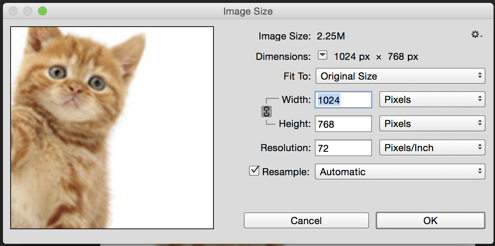
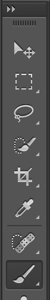
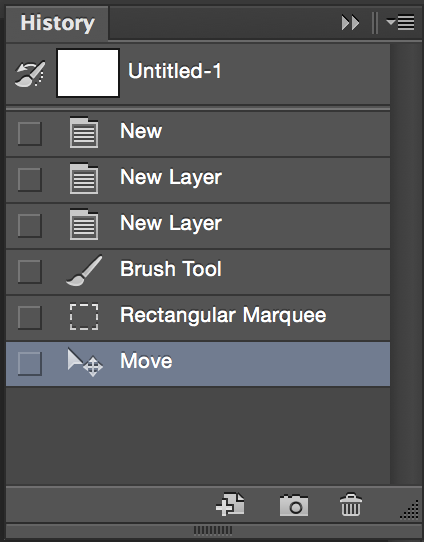
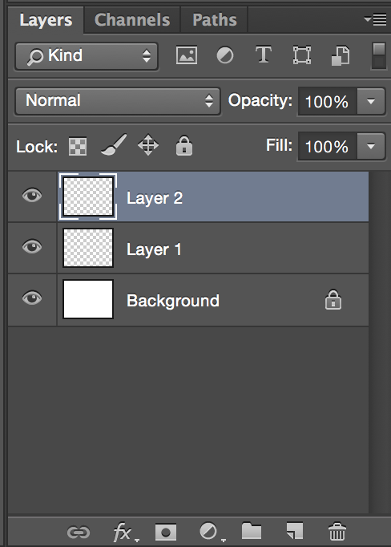

Introduction to Photoshop
Photoshop is the industry standard bitmap image editing tool. It's designed for editing digital photos, but has adapted to be used for a wide variety of uses from 3D graphics to animation.

Bitmap vs. Vector
Bitmap describes the color values of matrix of pixels
Vector describes points in cartesian space defined by lines, shapes and color.
File types
PSD - Photoshop Document - Retains ability to edit layers.
JPEG - Joint Photographic Experts Group - Lossy compression of digital images. Turns Photoshop work into rasterized (bitmap) images. Can only be edited destructively. Can change compression to make file smaller or larger, inverse relationship to image/data fidelity.
PNG - Portable Graphics Network - Raster graphics with lossless data compression. Popular for the Internet. Usually default on Apple products. Developed as better GIF.
GIF - Graphics Interchange Format - Bitmap image format. Limited to 256 bits of color data. Popular on Internet in early development. Supports animation.
JPEG - 14kb
PNG - 338kb
GIF - 55kb
Resolution / Image size
Resolution refers to the number of pixels contained in an image, or the amount of data in an image.
In a digital context, we are not concerned with the "resolution" referred to in Photoshop, which is used for setting the number of pixels per inch in a physical print. Beacuse we only deal in pixels for the web, we can ignore this setting. See the resolution video for more information on print settings.
Toolbar
History
Layers
Resources
Photoshop Tutorials